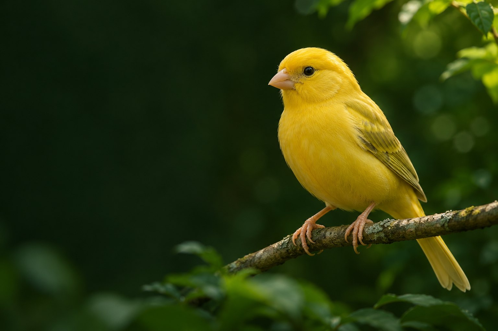

Tecnologia para aves domésticas
Cuide da sua ave de longe.
O SmartBird automatiza a alimentação da sua ave e ajuda você a acompanhar a água, a ração e a manutenção pelo painel web.
- Alimentação programada
- Níveis de água e ração
- Acompanhamento remoto
Recursos
A rotina da sua ave
em um só painel.
Programe a alimentação, acompanhe os reservatórios e consulte os avisos de manutenção. Explore os exemplos abaixo para conhecer o painel.
Visão geral dos reservatórios
74%
RaçãoNível do reservatório
62%
ÁguaNível do reservatório
Próxima alimentação17:00
Reservatório de água
62%
Água disponívelNível medido pelo sensor
Hidratação automáticaAtiva
Avisos de manutenção
Limpeza do reservatórioLembrete de manutenção da água
Status do lembretePendente
Como funciona
Da gaiola
ao navegador.
O SmartBird foi desenvolvido como projeto acadêmico para integrar eletrônica, Internet das Coisas e desenvolvimento web.
-
Arduino Mega
Lê os sensores e executa a rotina de alimentação e hidratação mesmo sem conexão com a internet.
-
Conexão MQTT
Leva as leituras ao painel e envia os comandos do painel ao dispositivo.
-
Painel web
Mostra os níveis, os horários de alimentação e os avisos de manutenção.